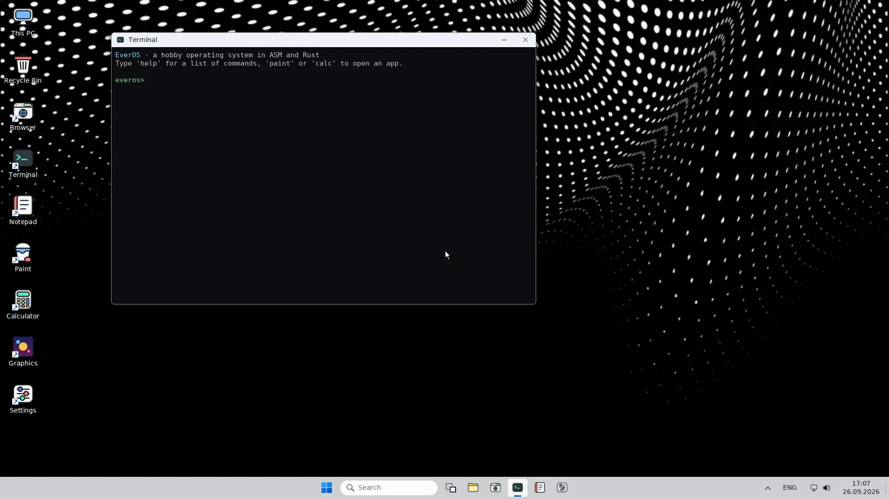

Рабочий стол в стиле Windows 11
Система сразу загружается в графический рабочий стол. Сглаженные шрифты, скруглённые углы, мягкие тени, и ничего не мерцает.
- Окна перетаскиваются, сворачиваются в панель и плавно появляются
- Меню Start с поиском по программам, клавиша Win
- Виртуальные рабочие столы, Корзина, закрепление на панели